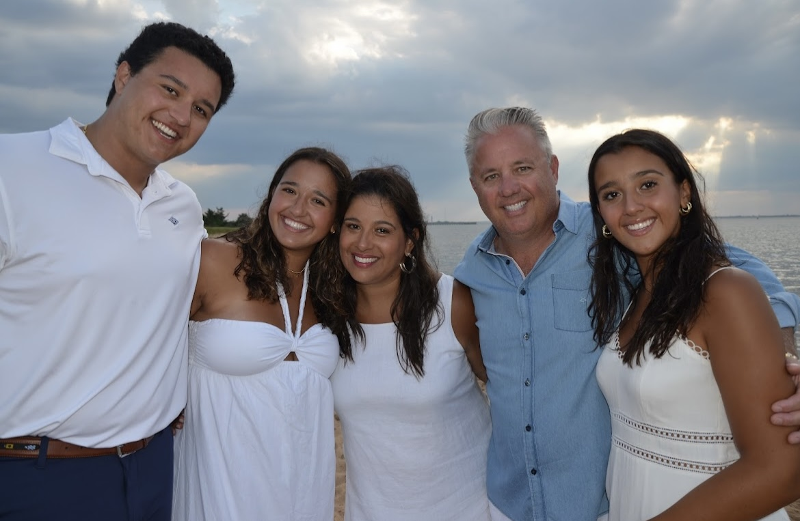

My name is Ava Greto and I am a sophomore at Elon University majoring in Strategic Communications with a minor in Professional Sales. I grew up in Rye, New York , with my two parents, my older brother, Preston, my younger sister, Phoebe, and my two adorable dogs, Rocco and Storm. I can be contacted at (914)708-7996 / agreto@elon.edu.
This summer, I spent my time nannying for two little boys from morning to night, playing, swimming, and cooking each day. During my days off, I dog sat and walked for my neighbors. Being able to play with dogs was the best part of my days!
My hobbies this summer included playing basketball, tennis, and hanging out with my family and friends. In my free time I also like to spend my time listening to music, my favorite song is Enchanted by Taylor Swift. I also spent a lot of my summer traveling with friends and family. My favorite destination this summer was Italy. Being with my parents, siblings, cousins, and grandparents were special.